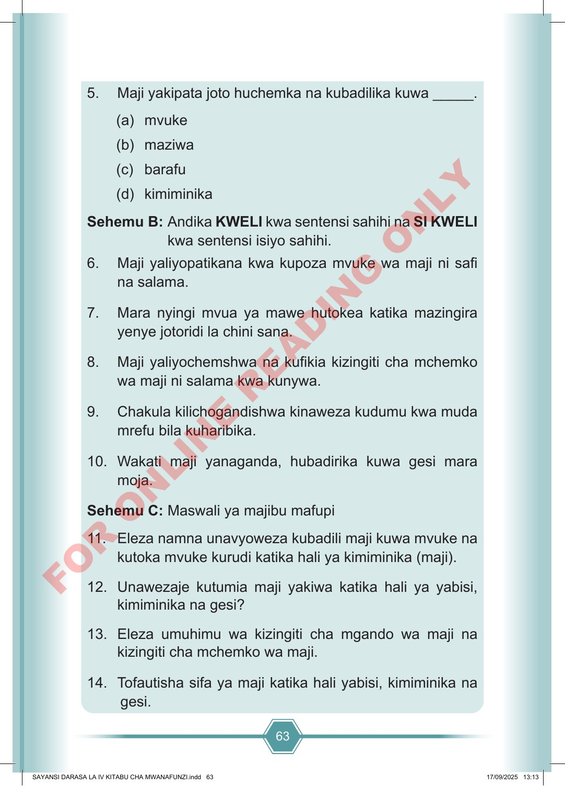

63 5. Maji yakipata joto huchemka na kubadilika kuwa _____. (a) mvuke (b) maziwa (c) barafu (d) kimiminika Sehemu B: Andika KWELI kwa sentensi sahihi na SI KWELI kwa sentensi isiyo sahihi. 6. Maji yaliyopatikana kwa kupoza mvuke wa maji ni safi na salama. 7. Mara nyingi mvua ya mawe hutokea katika mazingira yenye jotoridi la chini sana. 8. Maji yaliyochemshwa na kufikia kizingiti cha mchemko wa maji ni salama kwa kunywa. 9. Chakula kilichogandishwa kinaweza kudumu kwa muda mrefu bila kuharibika. 10. Wakati maji yanaganda, hubadirika kuwa gesi mara moja. Sehemu C: Maswali ya majibu mafupi 11. Eleza namna unavyoweza kubadili maji kuwa mvuke na kutoka mvuke kurudi katika hali ya kimiminika (maji). 12. Unawezaje kutumia maji yakiwa katika hali ya yabisi, kimiminika na gesi? 13. Eleza umuhimu wa kizingiti cha mgando wa maji na kizingiti cha mchemko wa maji. 14. Tofautisha sifa ya maji katika hali yabisi, kimiminika na gesi. SAYANSI DARASA LA IV KITABU CHA MWANAFUNZI.indd 63 SAYANSI DARASA LA IV KITABU CHA MWANAFUNZI.indd 63 17/09/2025 13:13 17/09/2025 13:13 F O R O N L I N E R E A D I N G O N L Y